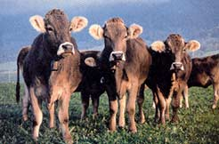

Nothing says country quite like that pattern of blotchy black spots on a white background. The familiar pattern of Holstein cows is even used by Gateway Computers' boxes to help emphasize the company's Midwestern roots. But lurking in that apparently benign pattern is a hidden agenda: Holsteins have been taking over the United States.
According to U.S. Department of Agriculture figures, 93 percent of all American dairy cows (more than 8 million head) are Holstein. The breed's dominance comes basically from being bred into freaks of nature, says Drew Conroy, an associate professor of applied animal science at the University of New Hampshire. A cow needs about 3,000 pounds of milk to successfully raise a calf. A Holstein holds the world record for milk production: 60,380 pounds of milk in one year, 20 times the natural amount.
The megamilk production has negative effects on the Holsteins and other breeds of cows. The Holsteins generally wear out after 2.5 lactations (around four years), much sooner than other breeds. Holsteins also already have the narrowest genetic pool of any cattle breed, and as inbreeding for maximum milk production continues, the danger of genetic maladies in the breed increases. Other dairy breeds' population numbers are now so small, breeders worry that there aren't enough left to keep a viable genetic pool.
Conroy says the solution lies not in trying to force large dairy operations to diversify, but getting more people to participate in food production and raise other breeds beside the Holstein. "In my classes, I ask, "How many of you like industrial farming?" And no hands go up. Then I ask, 'How many of you produce any of your own food?'And no hands go up."
|
 |
|
|